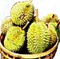
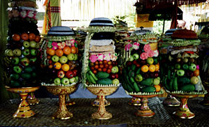
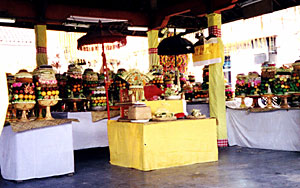
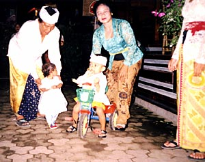

| Tidbits
Sent: 25 Oct 99 22:03 PDT
web version, with
|
 |
| Prior Trav-E-Log: Bali | Bali is ... Durian.... |
(Note:) This is the 3rd in a series of Trav-E-Logs© sent while traveling in S.E.Asia between Oct 16, 1999 and Jan 22, 2000.Hi Folks,
This email is not newsy -- just informative. Things are going well. Enjoy the descriptions and answers below.
BAHASA INDONESIA - The official, unifying language of Indonesia, similar to Bahasa Malay, and spoken as a second language by most Indonesians. It is the primary language taught in the school system. The letter "C" is pronounced like "Ch" in English.
FRUIT
- Always carry fruit while traveling, as you never know when you will be
able to eat again, and it is the safest thing for a traveler to eat, provided
you peel it yourself and don't eat the skin. Papaya, banana, pineapple,
and mango often supplement my breakfast. But the best fruits are
described as follows:
Durian - Mellon-sized fruit with the reputation of being the
smelliest of all. See photo above.
Manggis - Mangosteen, peach-sized deep-purple fruit with cloves
of white flesh. Light flavor, yet the sweetest fruit I have ever eaten.
Caution -- the ants also love this fruit.
Markisa - Passion fruit, the size of a large lemon, with soft
edible seeds and pulp similar to pomegranate.
Nanka - Jackfruit, huge water mellon-sized fruit, flavor reminds
me of peach/pineapple/mango.
Rambutan - The hairy fruit with a texture and flavor similar
to lychee. Durable for backpacking.
Salak - Skin with scales like a snake, fruit tastes more like
a nut. Also very durable.
FOOD - While traveling in non-western lands, it is always wise to have
no pre-conceived ideas as to the taste of familiar sounding foods. In 1967,
a hamburger in Japan tasted like meat loaf on a piece of bread. Examples
in Bali:
Balinese curry chicken - an anemic fowl, boiled in a curry sauce.
Is this the fate of the famous fighting cocks of Bali?
Vegetable Soup - clear broth with chunks of pineapple, cucumber,
tomato, and a few carrot strips.
Pizza - a rounded, flattened Italian bread dough smothered in
a watery stew of squash, tomato, bean sprout, with a few carrot and green
bean slivers.
INTERNET - Indonesia style. Typical download rates, 100 bytes/sec. with rates as low as 40 not uncommon. E-mail message through a web browser requires 6 minutes to download, on average. Folks tell me connections are faster in Denpasar, but then that's where the demonstrations were held a few days ago.
BIRDING - Most common wild birds in Ubud, Bali, are Eurasian tree sparrow, spotted dove, island turtle-dove, and white bellied swiftlet circling overhead, especially in the evening. Have also seen the white egret, a bird like a yellow chat, but with a bill shaped more like that of a kingfisher (olive-backed sunbird), and several mockingbird sized birds with pale yellow under rump, a tiny brown crest, black eye patch extending to the beak, and white head (yellow-vented bulbul). Saw many swiftlets and barn swallows circling, even during a rainstorm. The Pondok Pekak library offered an unusual birding opportunity, relaxing with my binoculars and their bird book. It was here I spotted the colorful Scarlet-headed Flowerpecker, Scaly-breasted Munia, and Javan Munia. Other birds seen out of town are White-collard kingfisher, Javan Kingfisher, Pied Bushchat, and Cattle Egret. Unfortunately the best place to see birds is in the homes of Bali, as many homeowners own a remarkable variety of caged birds. Bali bird walk, at $33, is too rich for my budget.
CEREMONIES - Saturday was a holiday in Bali, focusing on the children, like our Halloween. Banks were open, as well as most businesses, but in the homes and temples many ceremonies were taking place. Everyone dressed in traditional costumes, including children of all ages. The female costume consists of a solid-colored open-laced blouse, with sarong and sash. Most women transported a fruit basket creation on their heads, and placed it in the designated temple area for later blessing. These baskets are works of art, some as high as six tiers of fruit. After the blessing by a priest, the owner collects the basket and distributes the fruit for consumption by family and friends. The male costume consists of a special extra long white shirt/jacket, a Udang Puteh (white scarf wrapped on the head), an inner cotton batik sarong, a Saput Kuning (outer yellow silk or rayon sarong), with Antang (sash). Footwear on both appeared optional. I've heard conflicting info, but this holiday appears to be based on the Hindu "knowledge and education", as some said the same holiday is celebrated in India.
BECAK - A human powered urban vehicle used as a taxi. Think of rickshaw, or trishaw, but every town has it's own design. Some are "side-car" three wheelers, while some are steered by grasping the passenger carriage. Nowadays, most becak (pronounced "bechack") are peddle powered, and made from a modified bicycle frame. Often, the owners take great pride in painting and decorating them "distinctively".
BEMO - A micro van/taxi, often too small for Western roads. But in Indonesia, eight or more people are crammed into one, each paying the agreed upon price. In some cities, prices are regulated, and the bemo will have a letter or number affixed designating the route he will follow. These are the safest ones for travel, as the price is fixed. But in other cities, the driver has the freedom to go anywhere, and charge anything, so you must negotiate the fare before entering. It helps to speak a few key words of the language, and to hone your bargaining skills.
GEKKO - Gecko, a neat little lizard with suction cups on the toes, seen especially in the evenings running across ceilings and walls to catch flies, moths, mosquitoes, etc. This sound may be heard a few times an hour throughout Southeast Asia.
MANDI: Southeast Asian method of taking a bath, by squatting near a floor drain and pouring water over oneself from a reservoir, by the same name. It may look like a bath tub, but is your only source of fresh water -- don't contaminate it. Often, the mandi and toilet are in the same room.
Bill